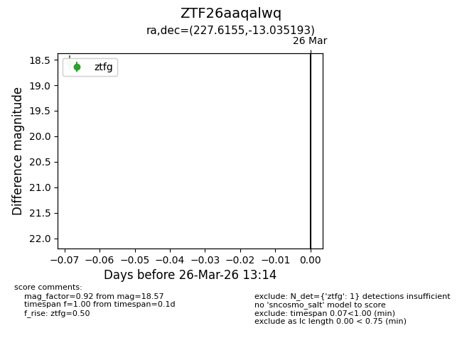
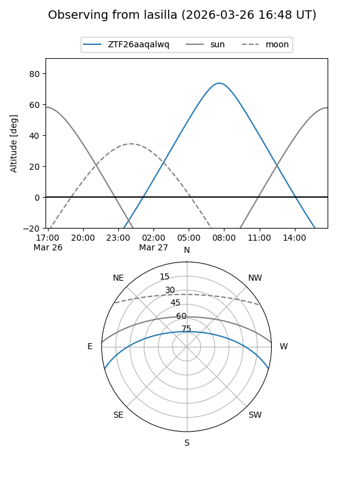
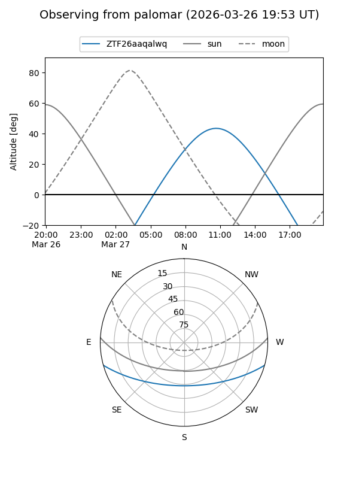

ZTF26aaqalwq
Target ZTF26aaqalwq at 2026-03-26 13:16
Aliases and brokers:
FINK: link
Lasair: link
ALeRCE: link
alt names
ZTF26aaqalwq (ztf,fink_ztf)
Coordinates:
equatorial (ra, dec) = 227.6155,-13.03519
equatorial (HMS+DMS) = 15:10:27.73,-13:02:06.69
galactic (l, b) = (347.4045,+37.55434)
Flags:
Photometry:
last ztfg=18.57
1 ztfg detections
Lightcurve

Visibility


Additional plots